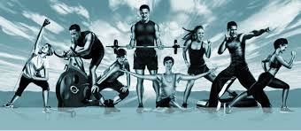
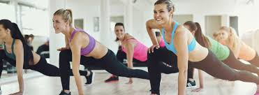

Basic Rules Of Health And Fitness
In today's quick-fix culture,it's more important than ever to remember that a few simple lifestyle changes can transform your overall health.Getting up off the couch and taking part in regular physical activity is one of the most important things you can do to ensure you remain healthy.Regular exercise can help to control your weight, strengthen your bones and muscles, and reduce your risk of cardiovascular disease, type 2 diabetes, and some cancers.Furthermore, being active improves your mood, mental health, mobility, and ability to complete tasks as an older adult, as well as increases your chances of living longer.Adults are recommended to do at least 150 minutes of moderate-intensity physical activity each week to achieve substantial health benefits, and increase to 300 minutes for more extensive benefits.If you are stuck on where to begin or are worried about getting injured, the good news is that aerobic activity — such as brisk walking — is considered to be safe for most people.Hundreds of fitness blogs are also available to help you on your way and provide tips, ideas, and information on the best types of activity to boost fitness and instructions on how to do them.
How Excercise Affects Your Body?

We all know that exercise is good for us, but when we understand why, it makes getting off the couch and into the gym a lot easier. Here’s an explanation of what happens when you work out, and how it can help you deal with the pains and the gains.The body is a complex machine. While we like to think that when we work out we'll immediately feel and look better, it's not always that simple. A lot happens in your body when you first start working out, and the longer you work out the less things change. Here's what you can expect, what's happening, and how you can use that knowledge to improve your workout routine.The first thing you notice when you start working out is that you're out of breath and your pulse is high. This is always a bit disconcerting, but it's perfectly normal. When you first start working out, your body responds by raising your heart rate and causing you to breathe heavy.While those first few weeks are tough, exercise gets a lot easier as you go along, and it's because your body starts adapting to your workout. Of course, everything in your body is connected, so while you might only feel a difference in your breathing or heart rate at first, Parr points out that it's tied to your muscles as well.The way you get the oxygen to the muscle fibers is by breathing oxygen into your lungs and then your heart pumps the oxygenated blood into your muscle. So, today you jump on the treadmill for the first time and you run three miles. Your heart rate is pretty high, your breathing is pretty heavy, and you feel pretty crappy. But if you do that every day for three or four weeks you'll notice that at the same speed your breathing won't be that hard. The reason for this is because your muscle has changed and it's using oxygen a lot better which lowers your heart rate.
How Yoga Keeps You Fit?

The art of practicing yoga helps in controlling an individual's mind, body and soul. It brings together physical and mental disciplines to achieve a peaceful body and mind; it helps manage stress and anxiety and keeps you relaxing. It also helps in increasing flexibility, muscle strength and body tone. It improves respiration, energy and vitality. Practicing yoga might seem like just stretching, but it can do much more for your body from the way you feel, look and move.Yoga asanas build strength, flexibility and confidence. Regular practice of yoga can help lose weight, relieve stress, improve immunity and maintain a healthier lifestyle.
- Improves your flexibility
Improved flexibility is one of the first and most obvious benefits of yoga. During your first class, you probably won’t be able to touch your toes, never mind do a backbend. But if you stick with it, you’ll notice a gradual loosening, and eventually, seemingly impossible poses will become possible. You’ll also probably notice that aches and pains start to disappear. That’s no coincidence. Tight hips can strain the knee joint due to improper alignment of the thigh and shinbones. Tight hamstrings can lead to a flattening of the lumbar spine, which can cause back pain. And inflexibility in muscles and connective tissue, such as fascia and ligaments, can cause poor posture.
- Builds muscle strength
Strong muscles do more than look good. They also protect us from conditions like arthritis and back pain, and help prevent falls in elderly people. And when you build strength through yoga, you balance it with flexibility. If you just went to the gym and lifted weights, you might build strength at the expense of flexibility.
- Perfects your posture
Your head is like a bowling ball—big, round, and heavy. When it’s balanced directly over an erect spine, it takes much less work for your neck and back muscles to support it. Move it several inches forward, however, and you start to strain those muscles. Hold up that forward-leaning bowling ball for eight or 12 hours a day and it’s no wonder you’re tired. And fatigue might not be your only problem.Poor posture can cause back, neck, and other muscle and joint problems. As you slump, your body may compensate by flattening the normal inward curves in your neck and lower back. This can cause pain and degenerative arthritis of the spine.
- Prevents cartilage and joint breakdown
Each time you practice yoga, you take your joints through their full range of motion. This can help prevent degenerative arthritis or mitigate disability by “squeezing and soaking” areas of cartilage that normally aren’t used. Joint cartilage is like a sponge; it receives fresh nutrients only when its fluid is squeezed out and a new supply can be soaked up. Without proper sustenance, neglected areas of cartilage can eventually wear out, exposing the underlying bone like worn-out brake pads.
- Protects your spine
Spinal disks—the shock absorbers between the vertebrae that can herniate and compress nerves—crave movement. That’s the only way they get their nutrients. If you’ve got a well-balanced asana practice with plenty of backbends,forward bends, and twists, you’ll help keep your disks supple.
Some Best Motivational Workout Quotes:
- Today I will do what others won’t, so tomorrow I can accomplish what others can’t.
- Do something today that your future self will thank you for.
- We are what we repeatedly do. Excellence then is not an act but a habit.
- No matter how slow you go, you are still lapping everybody on the couch.
- The difference between the impossible and the possible lies in a person’s determination.
- If you want something you’ve never had, you must be willing to do something you’ve never done.
- To give anything less than your best is to sacrifice the gift.
- The last three or four reps is what makes the muscle grow. This area of pain divides the champion from someone else who is not a champion. That’s what most people lack, having the guts to go on and just say they’ll go through the pain no matter what happens.
- No matter how many mistakes you make or how slow you progress, you are still way ahead of everyone who isn’t trying.
- Just believe in yourself. Even if you don’t pretend that you do and, and some point, you will.
- Every day is another chance to get stronger, to eat better, to live healthier, and to be the best version of you.
- We cannot start over. But we can begin now and make a new ending.
Get our wellness newsletter!